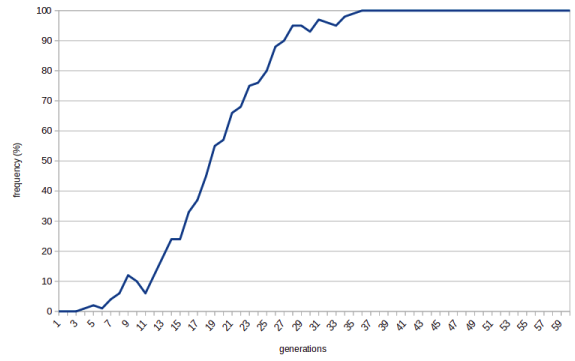
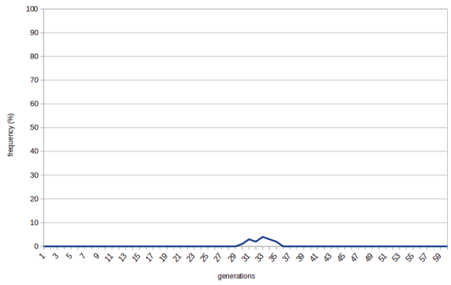
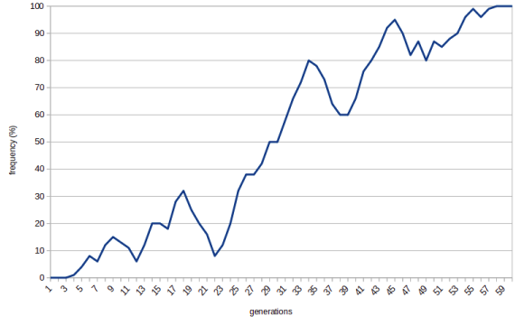
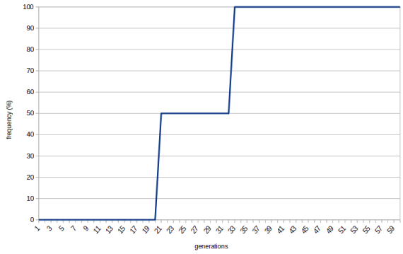
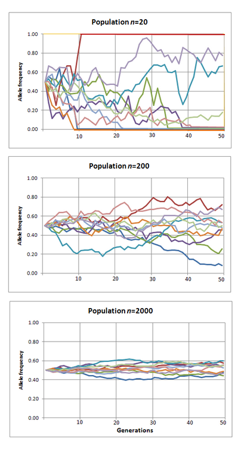
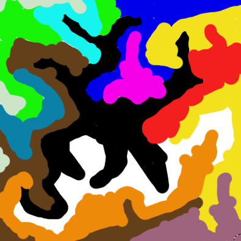

Original article: Studies on Slack
Proposition: If you have enough free resources you can evolve irreducibly complex features.
Imagine a bunch of yeast cells added to a barrel of malt when beer is being brewed. They have an ocean of free resources at their disposal. Surely, the evolutionary pressure will be low and the yeast cells would be able to escape the local maximum and evolve an irreducibly complex eye.
Where this idea fails is not taking the nature of exponential growth into account. Exponential means being fast. It means, in fact, being faster than anything you can visualize. The barrel would be fully fermented in just couple of days.
In other words: No matter how big a whale fall is, it will be exploited fast. The body of the whale will be eaten in months and the last bacterial remains of the ecosystem will survive for maybe 100 years. Nowhere near the time needed for a complex evolutionary change to happen by chance.
It's worth looking at E. coli long-term evolution experiment here. Since 1988 E. coli is cultivated in a uniform substrate and observed to see how it evolves. From our perspective it's interesting that each day 1% of population is transferred to a new flask with the fresh substrate. One can think of it as of a new whale fall every day. Unfortunately, I am not aware of a control experiment where substrate would be added gradually, which would allow us to see whether environment with slack is more conductive to evolution of new features than environment without slack.
However, in one of the populations in the experiment a speciation event was observed. There's one strain of E. coli that has advantage during growth on the substrate (slack) and another strain that has advantage during stationary phase, when the substrate runs out (moloch).
That hints that supposed slack may not be slack at all, just a different environment exploited in competitive manner by different subset of species (ecological opportunists).
Proposition: Isolation of small subpopulations can produce slack.
Let's start with some basics of population genetics so that we have tools to understand what's going on.
Let's say no human being is able to roll their tongue. What happens when a mutation arises that gives one that ability?
Well, if rolling your tongue makes you more likely to survive and have more children then the trait will be actively selected for. The frequency of the tongue-rolling allele in the population will increase rapidly:

Note that when the frequency reaches 100% there's no way back. There are no more non-tongue-rollers that could reproduce and take over the population. We say that the allele becomes fixed.
But what happens if the allele has no effect on your fitness? What it tongue-rolling makes you neither more likely to survive and reproduce, nor less likely?
In that case the frequency of the allele is a random walk. If increases and decreases solely by chance. In most cases it means it will be wiped out quickly:

Sometimes, though, the allele gets lucky and becomes fixed:

We call this process of random fluctuation of allele frequency "genetic drift".
The things turn interesting when the population size is small. Imagine population of two. Now it's much easier for the new allele to become fixed. Once it comes to being via mutation it already has 50% frequency in the pool and all it takes to become fixed is reproducing once.

The smaller the population, the more alleles become fixed by chance alone. (The picture stolen from Wikipedia, CC BY-SA 3.0)

To put it in different words, there are two competing forces in play here. There's selection (determinism, Moloch). And then there's drift (randomness, slack). And there are two factors that determine which one is going to be stronger. First, the more effect the allele has on the fitness the more is its evolution driven by selection. Second, the smaller the population, the more it is driven by drift.
In very small populations even alleles that are deletrious (harmful to the survival of the individual) can become fixed by chance.
If there was a single allele that coded for the half of the irreducibly complex eye it could become fixed even though having a half of eye is, strictly speaking, worse than not having an eye at all.
What we gain here is time. We gain slack to wait for a new mutation to completes the eye. There are no more individuals with no eyes at all that would outcompete the half-eyed individuals. Now everybody has a half of an eye (even it the population size grows!) and we are waiting for something to happen. We are standing on a hillock in the adaptive landscape. It could be that the next mutation would produce no-eyed individuals again who would outcompete the half-eyed individuals. In that case we are back to where we started. But it may also happen that the next mutation would provide the second half of the eye and the individuals with the sense of sight would spread through the population.
Now, assuming that our small population originated by splitting from a large ancestral population, for example, some animals migrating to a new island, now that they have evolved a superior trait they can migrate back to their ancestral homeland, win the evolutionary race and become the dominant species. (See peripatric speciation.)
There's not much slack to be seen here. We can call small size of a population "slack" even if it is under intense evolutionary pressure, but that way the term loses its intuitive appeal.
But let's look futher.
Interesting alternative was proposed by the team of Andreas Wagner, here in Zurich. They start with the fact that neutral mutations (neither beneficial nor harmful) are subject to the random drift and thus a population is likely to have a lot of neutral variation at any given point of time. In other words, while the population has only a small variation of phenotypes (how the animals look like) it has large variation of genotypes (how the genomes of the animals look like). Then they show that different genotypes within the same phenotype can have vastly different "neighbourhoods". One animal may, to put it simply, undergo a single mutation and evolve an eye. Another may undergo a different mutation and evolve an ear.
Think of it as of a map. Each colour patch is a different phenotype. Locations within a patch are different genoptyes. Individuals in the population, thanks to neutral mutations (which are by definition free of the selection pressure) can explore the enire area of their particular phenotype. Once the environment changes there may be some individuals just across the border from the phenotype that would do better in the new conditions. Such individuals can undergo a single non-neutral mutation and result in a new phenotype which will then spread in the population via selection.

This may be closer to the intuitive notion of slack. Neutral mutations have slack because they don't affect the phenotype and are thus not acted upon by the selection.
Proposition: Two-layer evolutionary systems can produce their own slack. The outer system can introduce rules that give inner system some slack.
Let's look at some examples.
Multicullular organisms: Each cell is genetically identical to each other cell. There's no variance for the evolution to work with. Any mutations (cancer) are aggressively weeded out. There's no evolutionary slack in the sense of "freedom to evolve in random direction".
Eukaryotic cell: Eukaryotic cell has two genomes so it's harder to tell whether the outer system (nuclear DNA) gives the inner system (mitochondrial DNA) any slack. But we can make an educated guess. First, let's stress the point that mutations in mitochondrial DNA can be as dangerous as mutations in nuclear DNA. There is such a thing as mitochondrial cancer. It ends up with a cell packed up wall to wall with mitochondria. That implies that it doesn't pay off for the cell to give mitochondria too much slack. Second and more important: Look at the crazy measures the cells use to prevent mixing mitochondria from both parents when undergoing sexual reproduction. The fact that sperm cell is stripped of all of its mitochondria before the DNA is allowed to enter the egg cell hints that intra-cell mitochondiral evolutionary conflict is detrimental to the cell as a whole. To sum it up, it looks very much like eukaryotic cells give mitochondria as little slack as possible.
Social insects: In fully social insects such as bees, the individuals have different genomes, but they use a weird trick to ensure social cohesion. To make it short, their reproductive mechanism is such that a sister of a bee is more genetically similar to heself than her own offspring. That's an incentive not to reproduce herself but rather help the queen with reproducing. In the end the system doesn't look too much different from the system used by multicelular organisms. (It may be interesting to look at termites though, which lack the incentive system described above.)
All of the above are systems seem to be the cases of 100% coordination with no slack allowed.
Proposition: Two-layer evolutionary systems with migration can produce slack.
The difference to the previous scenario is that the lower level individuals (say, mitochondria) can migrate between higher level individuals (eukaryotic cells). While mitochondria cannot in fact migrate, there's a huge class of organisms that can. Namely, parasites. (In fact, it's a rule of thumb: Anything that cannot migrate tends to be a mutualist. Anything that can migrate has a tendency towards parasitism.)
These include typical parasites, such as pinworm, but also, on a different level, memes. The common characteristic is that the environment of a parasite is not a single individual of the host species, but rather the entire host species. In theory, an opportunity to play non-zero-sum games emerges: If a parasite helps its host to survive and reproduce it grows the host pool size and may get more populous itself. However, assuming free migration between hosts, there's nothing preventing the old bad strain of parasites invading the new hosts and eventually pushing the do-gooder parasites to the extinction.
Proposition: Two-layer evolutionary systems with controlled migration can produce slack.
I am going to get handwavy here.
Imagine that the control exercised by the outer system is incomplete. Not because the outer system would get any short-term evolutionary advantage from relaxing the control but simply because the controled individuals sometimes manage to escape and find a different host. It is not clear how such a relationship could be stable though. It seems that one side must prevail: Either the host gets full control and what we get is a mutually beneficial relationship or the symbiont manages to escape the control and becomes a hardmful parasite. (But look here.)
All that being said, there is one mechanism that seems to fit the bill. It's sex. Individual genes are able to escape the genome, but it happens in a very controlled manner.
Does that mean that sex gives species slack? One hint would be that sexual specifes in general evolve slower than asexual species. In other words, they are slacking. But I am not at all sure. If there's a mysterious question in evolutionary biology, it's the very existence of sex. Entire books were writen about it and there are dozens of proposed solutions. I don't feel confident enough to dig any deeper here, but it still may be worth considering.
May 23th, 2020
{kind=link}